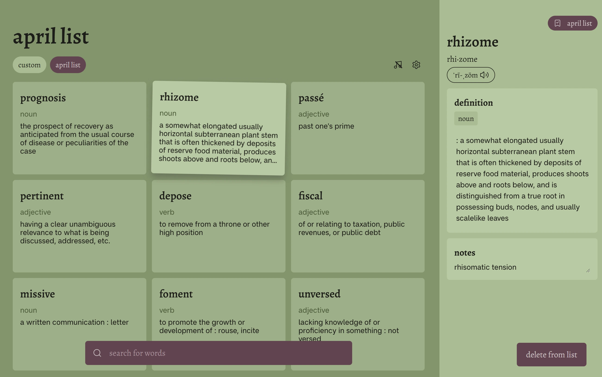

Vocab Forest: Web App
Live Site View RepoOverview
Vocab Forest is a web app that allows users to search and save vocabulary cards into lists. Built using React and Supabase as its main technologies, this was a personal project that I worked on with a friend with the goal of learning more about full stack development.
Role
UI/UX Designer
Team
Timeline
5 weeks
Design process
Skip to read about the Dev processProblem space
Why make Vocab Forest? Vocab Forest was created because I wanted a quick and simple way to save unfamiliar words and their definitions while reading. I found existing methods of recording vocabulary to be a hassle, for example:
Using pen and paper
- Interrupted my reading
- Was slow, especially for longer definitions
- And had no sorting mechanism, making review difficult
Using spreadsheets
- Was tedious, having to copy-paste multiple times into the correct column & formatting not carrying over
- Not mobile-friendly
Using dictionary sites
- A negative user-experience: being dictionary first meant that I had to navigate several times to find my saved definitions
- Cluttered with ads / unnecessary info
From these observations, I decided that Vocab Forest should be a lightweight and easy-to-use app. It should only centre one core functionality: search and save definitions for later review.
Explorations
Having the core functionality in mind, my initial explorations focused on two main questions: what data to display, and how to display it. This was done through brainstorming and sketch sessions.
I narrowed down the design to having a card gallery as the “main” view, and an expanded sidebar view on the left. I wanted this sidebar to include information that was important to me - definitions (including all variations), synonyms, antonyms, and a section for notes.

Initial ideas, showing the card gallery layout, and expanded sidebar on the right-side split by definition, synonyms, antonyms and notes. I played with the idea of having a sidebar on the left-side for word lists, but ditched it in the final design because it made the centre content too narrow.

Initial ideas, showing the card gallery layout, and expanded sidebar on the right-side split by definition, synonyms, antonyms and notes. I played with the idea of having a sidebar on the left-side for word lists, but ditched it in the final design because it made the centre content too narrow.
Wireframe and design system
As I wanted to focus on programming, I created high-fidelity wireframes of only the main home page & the element interactions within. It was enough to give me a rough idea of what the final product would look like. At this stage I decided on the name “Vocab Forest”, using green tones and serif headings to give a woody/whimsy/bookish vibe.

The final Figma wireframes I created before going into development. I was still exploring functionalities and styles at this point, but it was enough for me to get started.

The components sheet and text + colour styles I used for the wireframe. I used Alegreya for headings and Inter for body text.

The final Figma wireframes I created before going into development. I was still exploring functionalities and styles at this point, but it was enough for me to get started.

The components sheet and text + colour styles I used for the wireframe. I used Alegreya for headings and Inter for body text.
Final design and insights
Adjustments were made during development. I added new screens - mobile views, empty states, error flags and screens, feedback messages, dropdowns - and modified the design system to what it looks like now.

The homepage on desktop. The colour scheme was changed to provide less of contrast between card & background for a more relaxing experience. Buttons were changed to look more interactable rather than just text. When developing, we also found the API (our data source) provided simplified definitions, as well as the full definitions. We displayed simplified definitions on cards so users could capture more information at-a-glance, while having the option to expand on definitions if needed.

Mobile layouts of the title screen, login, home screen and sidebar (a popup) - responsiveness was an important consideration.

Forgot password user flow. It was designed to provide user feedback + autonomy at every step of the flow. For instance, every screen has a back button (← login) where the user can exit out of the flow at any time. The “check your inbox” screen is informative, and gives users options on what to do next.

Other forms of feedback in Vocab Forest: no list / no words message, toast message, 404 page not found designs.

Settings modal design and theme selection.

Mobile layouts of the title screen, login, home screen and sidebar (a popup) - responsiveness was an important consideration.

Forgot password user flow. It was designed to provide user feedback + autonomy at every step of the flow. For instance, every screen has a back button (← login) where the user can exit out of the flow at any time. The “check your inbox” screen is informative, and gives users options on what to do next.

Other forms of feedback in Vocab Forest: no list / no words message, toast message, 404 page not found designs.

Settings modal design and theme selection.
Development process
Features and implementations
Search and save vocabulary in lists
Expanding on a definition
Sort by options
Suggested search results
User authentication and RLS policy implmentation
Custom theming and media playback
Database design

Vocab Forest's database design.

Vocab Forest's database design.
Other Projects